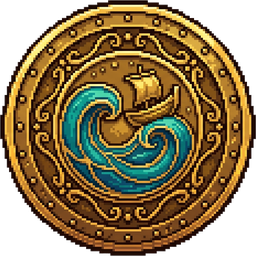

Bab Perjalanan
Pulau Sepuh
Seberapa jauh aku mau pergi sebelum aku berbalik?
Pelayaran Pertama
Dermaga masih menunggu.
Palka I · 0 kayu · 0 solar tersimpan
0Malam terbaik
0Zombie terbunuh
0Pulau disurvei
0Kematian
Driftholm · kabar dari dermaga terakhir
MEMUAT...


0—
JEDA
Laut menunggumu. Pasang pun ikut berhenti.